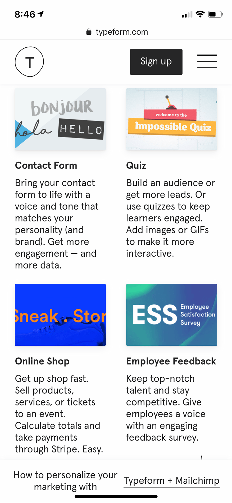

Proximity
Typeform
Typeform is a site that provides forms for websites. The design is clever and the page makes great use of proximity. This screenshot is from a little farther down the page, I thought these menu icons showed proximity well. I love that each section has elements that are equally spaced and the images are all the same size. The information is clear.
Alignment
MacRumors
MacRumors is a site that shares all the latest news on Apple products. In the past several months, it has lived up to its name by sharing all the newest rumors and news about the new iPhones, iOS, and accessories like the HomePod. I appreciated the alignment of the text in this site. The heading elements are aligned on the left, and all of the article text is aligned with its header and timestamp. This format follows through the entire site.
Repetition
Blitsy

Blitsy is a crafting supply site. They have a huge variety and it is a site I visit often. I loved the repetition of color and shape in this website. The same pink and blue are continued throughout the site. The most obvious is probably the pink circle with sale information. The only obvious issue I saw with this page was that the text at the top isn't appropriately sized for mobile and requires sideways scrolling to view fully.